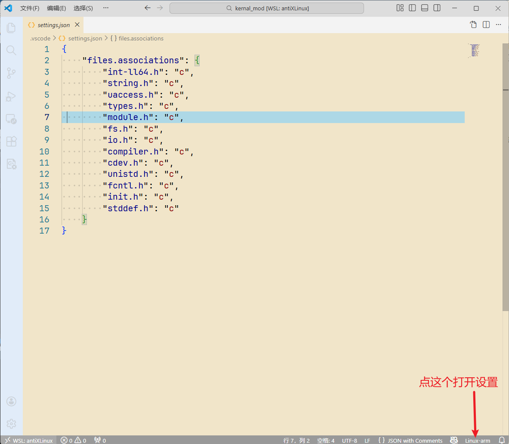
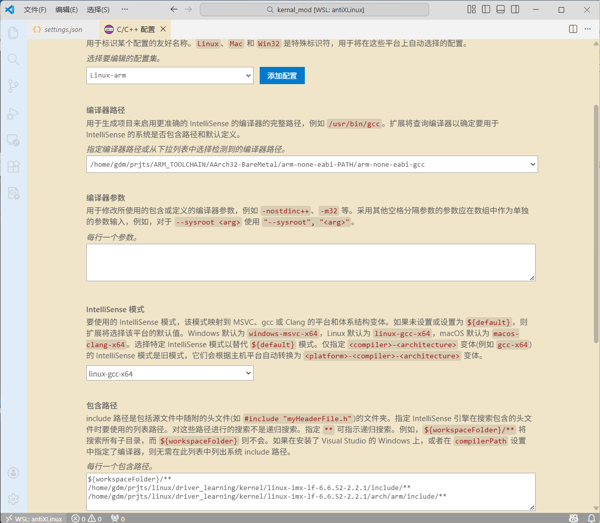
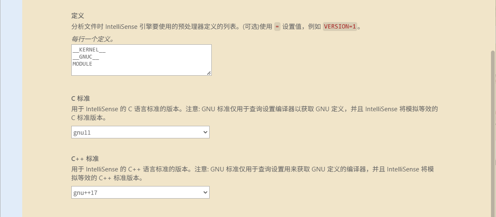

版权信息
warning
本文章为博主原创文章。遵循 CC 4.0 BY-SA 版权协议，转载请附上原文出处链接和本声明。
VSCODE的C/C++插件对于在Linux源码环境下的Linux驱动开发支持并不是很好，主要体现在文件查找和错误的“错误提示”（红色波浪线真的逼死强迫症，本篇记录一下对VSCODE的环境设置。
此篇主要介绍
- 指定内核源码路径
- 指定编译器路径
- 添加一些宏定义让编辑器不再错误地划红色波浪线（“报错”）
配置
通过这个按钮选择配置集或打开设置：

具体的设置大概是这样，这里我新建了一个配置集 linux-arm


如果使用json设置的话：（c_cpp_properties.json）
{
"configurations": [
{
"name": "Linux-arm",
"includePath": [
"${workspaceFolder}/**",
"/home/gdm/prjts/linux/driver_learning/kernel/linux-imx-lf-6.6.52-2.2.1/include/**",
"/home/gdm/prjts/linux/driver_learning/kernel/linux-imx-lf-6.6.52-2.2.1/arch/arm/include/**"
],
"defines": [
"__KERNEL__",
"__GNUC__",
"MODULE"
],
"compilerPath": "/home/gdm/prjts/ARM_TOOLCHAIN/AArch32-BareMetal/arm-none-eabi-PATH/arm-none-eabi-gcc",
"cStandard": "gnu11",
"cppStandard": "gnu++17",
"intelliSenseMode": "linux-gcc-x64",
"mergeConfigurations": false,
"recursiveIncludes": {},
"browse": {
"limitSymbolsToIncludedHeaders": true
}
}
],
"version": 4
}注意的要点
1. 编译器路径指定
指定用于编译裸机的交叉编译器！比如我的ARM官方工具链的用于裸机编译的 arm-none-eabi-gcc 。这个指定编译器不重要，真正用于编译的是我们在linux内核源码的makefile里指定的编译器，只是VSCODE要在这个编译器的路径下找一些头文件啥的，如果你使用带有linux目录的编译器的话，比如 arm-none-linux-eabihf-gcc，它的目录下有linux文件夹，而VSCODE优先搜索编译器路径，会导致跳转的文件不是指定的源码路径下的文件。还会提示找不到文件。。。。
2. 指定一些宏定义避免VSCODE错误地划红色波浪线
指定上图的三个宏定义，否则VSCODE会错误地画红色波浪线（编译可通过，但是VSCODE报错。
3. 包含的路径
一般包含：
- linux源码根目录下的
include - 对应架构下的
include